UI/UX Designer
 Back to Home
Back to HomeCancer Charity App and Website Donation Redesign UI/UX Design Case Study
The product:
The ThyCa Thyroid Cancer charity is an existing website meant to provide support services for Thyroid Cancer patients and their families and caregivers. The online donation flow was redesigned for this Google UX Design certificate project to make it easier for donators to make monetary contributions from the website or a mobile device Project overview.
Project duration:
August 2021 – September 2021
The problem:
The online donation flow on the website was not accessible or mobile-friendly. This can make it difficult for many users to make monetary contributions on the website or, particularly, on a mobile device
The goal:
To improve the user interface of the donation process on the website and make it more responsive on mobile devices in order to increase donations to the cancer charity
Responsibilities:
User research, market research, wireframing, mockups, prototyping, user testing and analysis
Before the Redesign:
The online donation form was not very mobile-friendly. Although it was possible to submit a donation, the fields were not designed for the mobile environment. Options were difficult to read for some, and very small radio buttons were difficult to select and not accessible. The formatting was not centered or aligned properly on phones, requiring horizontal scrolling at times. Mobile design seemed to be an afterthought.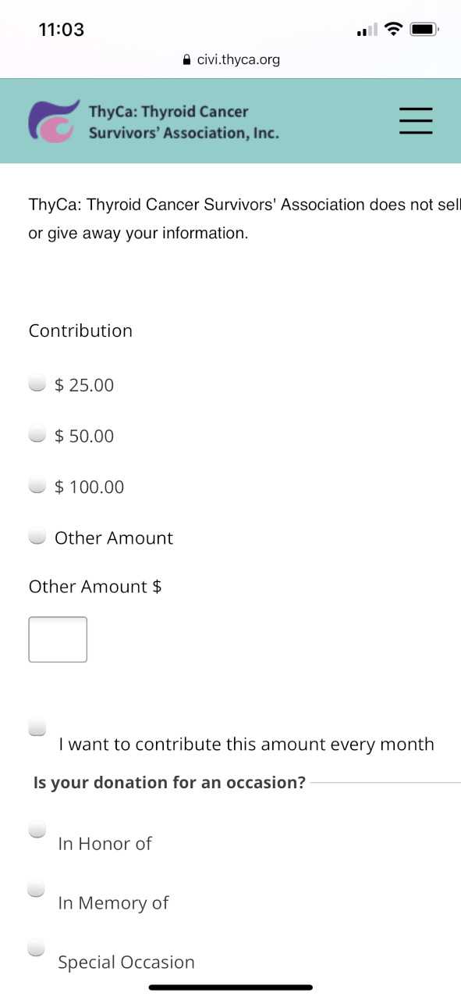
User research
I performed a Moderated Usability Study with 5 testers each in 2 rounds of user testing. In the 1st round of testing, users were asked to interact with a low-fidelity prototype presented on a smartphone and were verbally asked a series of prompts and prompt follow-up questions. In the 2nd round, users were asked to perform additional tasks with a high-fidelity prototype. Assumptions going into user testing were that the app would be helpful to people donating money and that the app was easily to navigate. Overall, the testers confirmed these assumptions and were pleased with the donation flow. However, there were a couple issues raised when it came to filling out the donation form. Based upon this feedback, these issues were corrected with iterations of design updates.
User Pain Points and Ways to Mitigate
1. Frustrating form. Too many form fields all at once discouraged some users from filling it all out.
- Split the form screen into 2 main screens
- Pre-fill in any information that is already known
- Allow all entered information to be stored in profile for future donations
3. Difficulty on mobile. Form was not mobile-friendly. It was difficult to read and select the appropriate options. Make options and fields larger and more easily selectable
4. Home too busy. Home screen was too cluttered and users did not know where to go next Streamline home page content to the most important goals of the organization
Personas
Problem statement:
Celia is a busy mother, sister, and member of society who needs to easily donate to ThyCa on her phone because the charity needs money and she wants to teach generosity to her daughter.
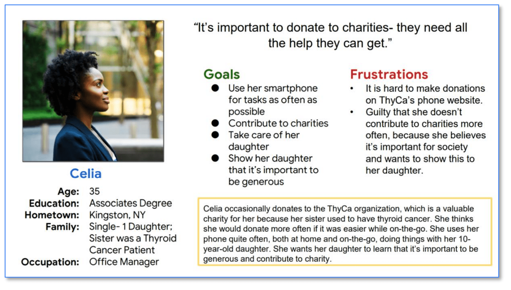
User journey map I listed out the detailed tasks in chronological order that our personas need to perform, in order to understand the process and empathize with pain points. This helped determine how the app should work and how it can resolve these pain points.
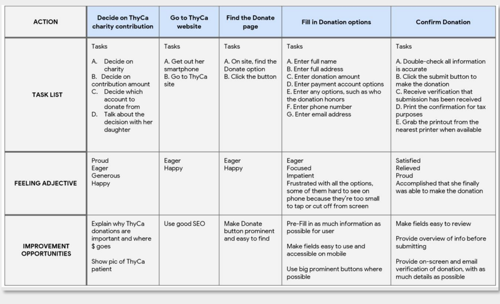
Site Map
I thought through the logical order of the donation flow. This helped determine the necessary screens to get the task performed easily and without confusion.
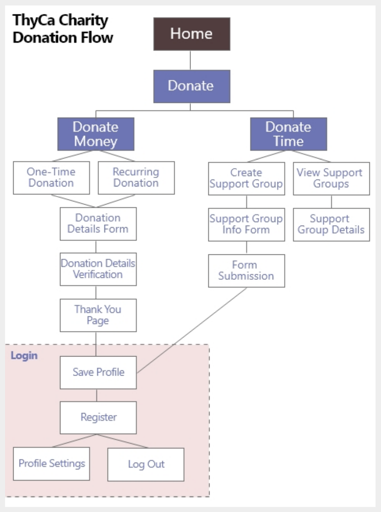
Paper Wireframes
As I sketched design ideas for the donation screens, I thought about each step the user takes when making an online donation. The screen designs need to make filling out the form easy for users.
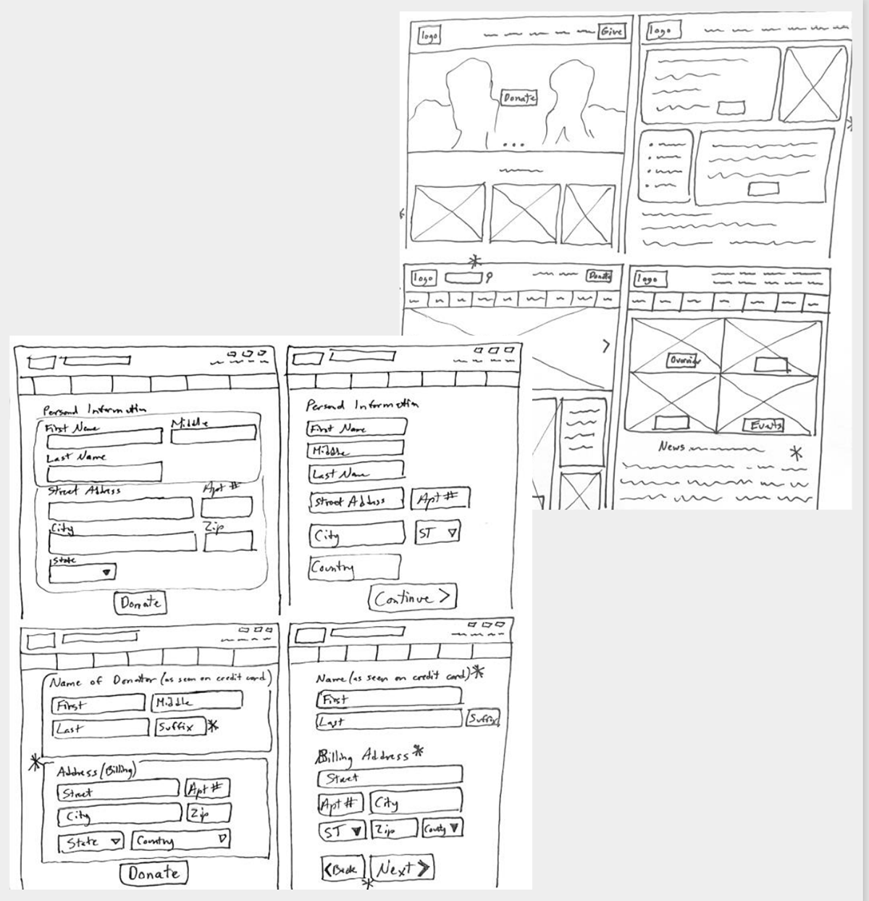
Digital wireframes
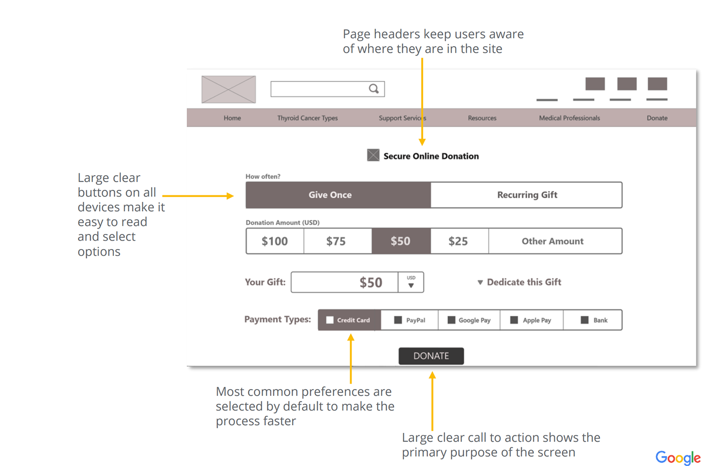
To make the website responsive on other devices, such as smartphones, I sketched layouts for mobile as well, keeping in mind accessibility and best practices.
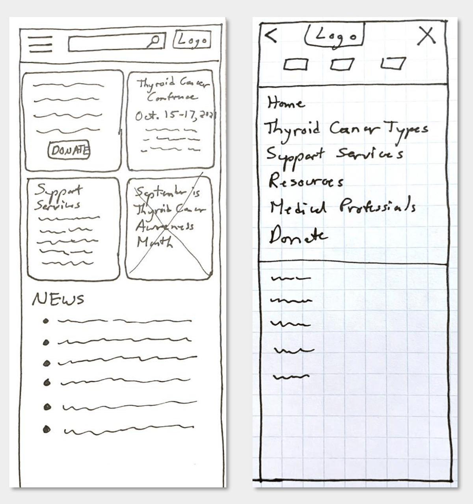
Digital Wireframes
User feedback and pain points informed design decisions in order to increase usability. Based upon paper wireframes, I created digital wireframes for the website and mobile device donation screens.
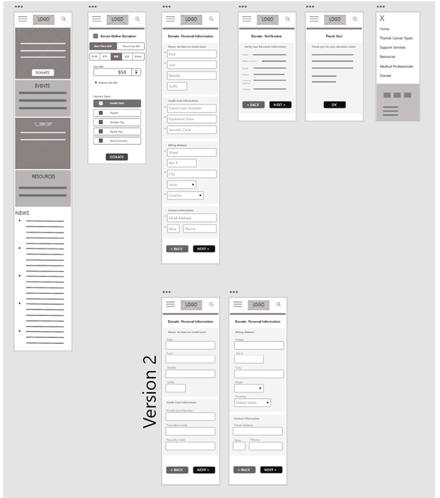
Low-Fidelity Prototype
I made design decisions based upon the user journey and paint points. Based upon ongoing user feedback, I continued to update the designs for the website for both desktop and mobile.
Usability Study
Study type: Moderated usability study of prototype Participants: 5 testers, varying ages and genders Location: Carrollton, VA Length: Over two days, in five 20-minute sessions
Usability Study Findings:
1. Too many form fields on one screen is frustrating. Split the fields into 2 screens.
2. Asterisk placement is important. Indicating required fields should not be confusing.
3. Labels should be outside of form field. This improves accessibility of the form, particularly for those using screen readers.
Design Iterations
Some users expressed frustration when they saw all of the form fields at once. It seemed less overwhelming to them when only some fields were presented on the same screen.
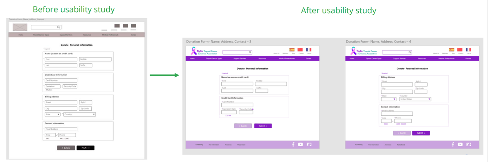
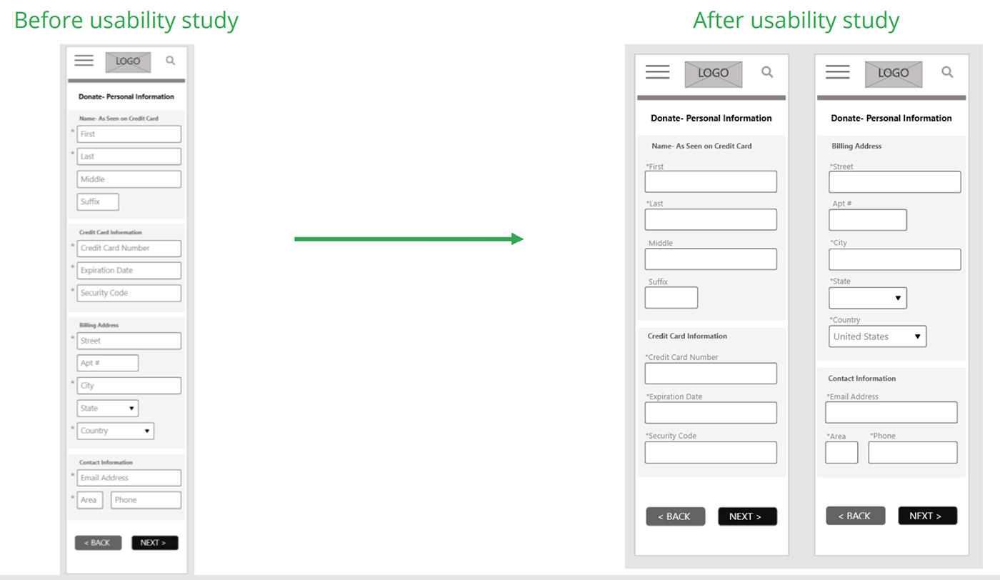
Mockups
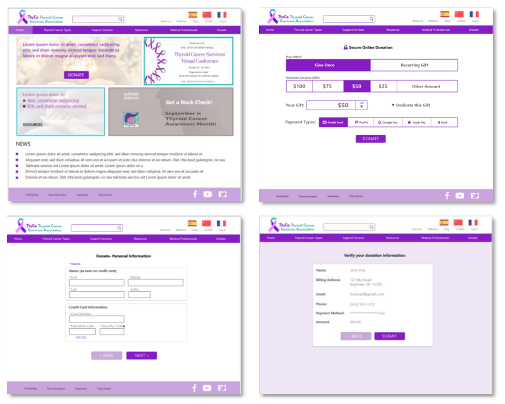
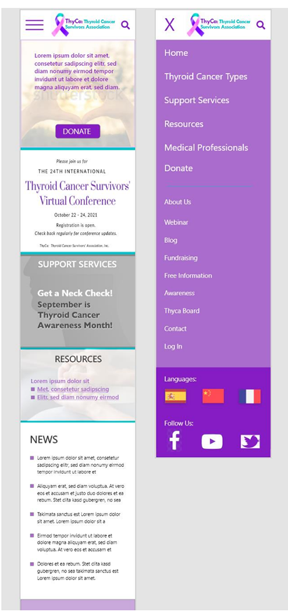
High-fidelity prototypes
The hi-fi prototype includes updates made to improve form usability based upon the user feedback.
Accessibility considerations
1. I used form labels outside of the form fields, because this improves the experience for those using screen readers by attaching a Label with each fied. It also improves user understanding of the purpose of each field.
2. I increased the form field size and made the options large enough so that they are easy to use and select on phones.
3. I grouped related fields together to help organize the flow and aid user understanding of how the fields are related.
Takeaways
Impact: Users would now be able to make an online donation more quickly, including while on-the-go with their mobile phones. Users with screen readers could now make donations to the ThyCa charity. It is expected that donation amounts would increase due to the improved user interface.
What I learned: I learned that improving accessibility and responsive design can directly improve the Return On Investment (ROI) of a website and lead to more user engagement.
Back to Home
To Top of Page
Contact
Email: jenlycke@gmail.com
Phone: (757) 477-1244


Just For Fun